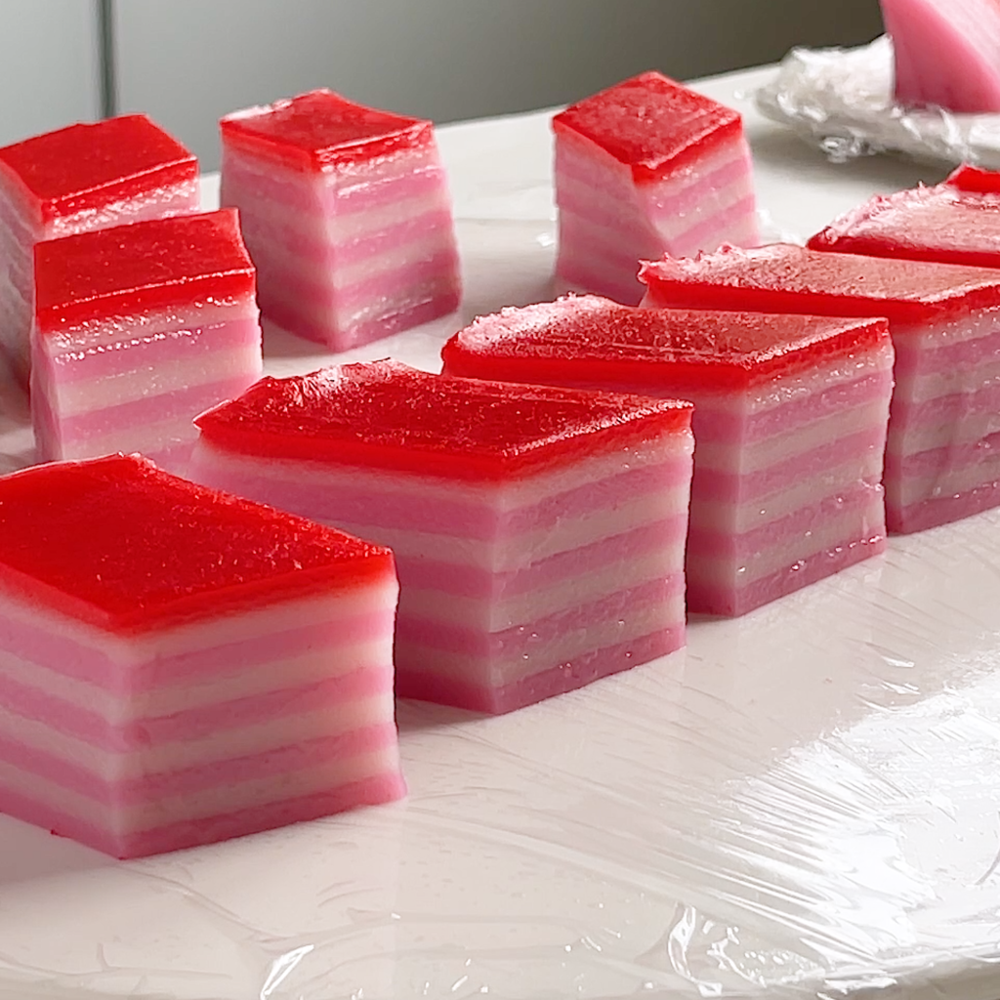

Ingredients
- 2 cups rice flour
- 1 cup tapioca flour
- 1 1/2 cups coconut milk
- 1 1/2 cups water
- 1 cup sugar
- Food coloring (red or green)
Instructions
- Mix rice flour, tapioca flour, coconut milk, water, and sugar until smooth.
- Divide the batter into two portions and color one portion with food coloring.
- Steam one layer of the batter in a tray for 5 minutes, then add the next layer of the other color. Repeat until all batter is used.
- Let cool completely before slicing and serving.